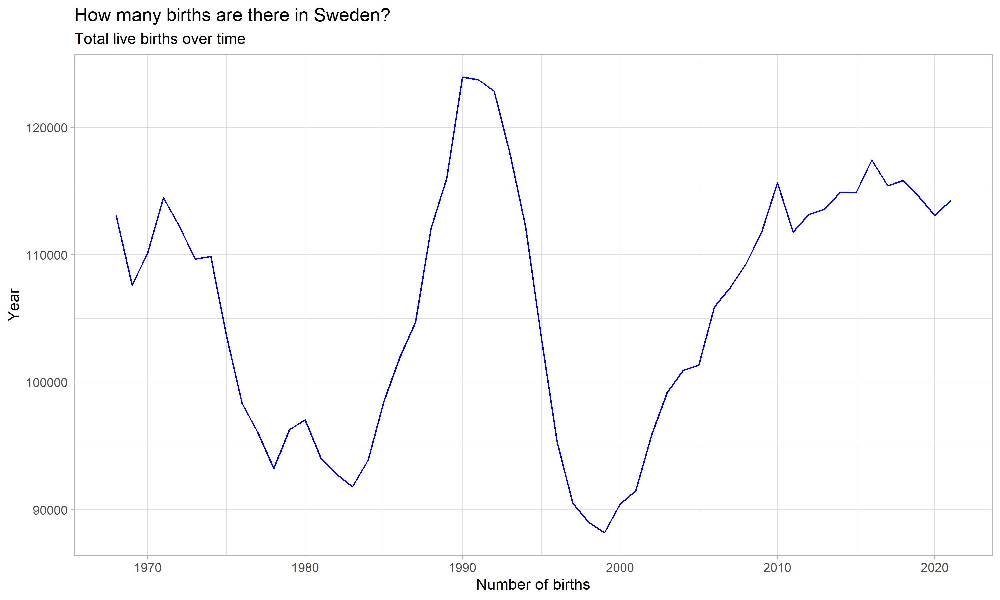
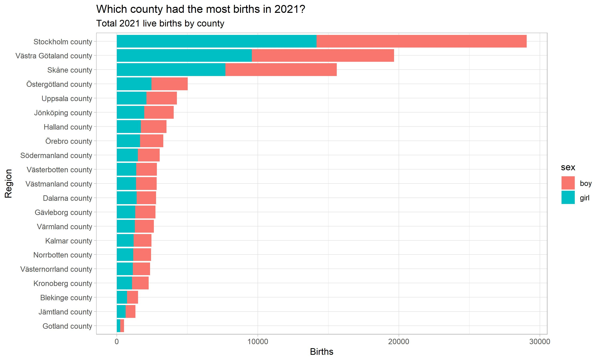

I recently discovered the R package pxweb which facilitates access to public statistical data in Sweden. As with many officially-run sites providing public data, navigating menus and manually downloading files can be cumbersome, much better to gain access with an API where you can download data directly and start using it. However, just mentioning the word “API” may scare away a few folks, so coming across packages like pxweb is always a refreshing discovery. Let’s take a quick look and see how is works!
First, let’s load some packages.
# To install packages
install.packages("pxweb")
install.packages("tidyverse")
install.packages("janitor")
library(tidyverse)
library(pxweb)
library(janitor) # for some excellent re-naming functions
Sys.setlocale(locale="UTF-8") # recommended to deal with åäö vowelsUnless we’re talking enormous data sets that make no sense storing on your personal computer, I am a proponent of getting all the data once and using R to do any filtering or subsetting. The pxweb package makes this a breeze with built-in time outs for requests and a nice little interface to quickly find the data you need.
We’ll take a look at the interface first, we can do that by calling the interactive function pcweb which starts the interactive session and will guide you to the data you like:
d <- pxweb_interactive("api.scb.se")This initiates the interactive session. You enter your choice at the prompt and hit enter. I won’t walk through all the options here as they are pretty self-explanatory. Here’s what the menu looks like after choosing English as a language and getting past the first few formality prompts (and selecting “a” to show all options:
==============================================
R PXWEB: Content of 'api.scb.se'
at '/OV0104/v1/doris/en/ssd'
==============================================
[ 1 ] : Household finances
[ 2 ] : Prices and Consumption
[ 3 ] : Trade in goods and services
[ 4 ] : Public finances
[ 5 ] : Financial markets
[ 6 ] : Business activities
[ 7 ] : Energy
[ 8 ] : National accounts
[ 9 ] : Housing, construction and building
[ 10 ] : Environment
[ 11 ] : Population
[ 12 ] : Democracy
[ 13 ] : Labour market
[ 14 ] : Living conditions
[ 15 ] : Education and research
[ 16 ] : General statistics
[ 17 ] : Agriculture, forestry and fishery
[ 18 ] : Transport and communications
==============================================
Enter your choice:
('esc' = Quit, 'b' = Back, 'i' = Show id) There’s loads to discover here and lot of really nice data to work with. For this example, we’ll take a look at some Swedish live birth data over time. From the above menu I continue through the menu making sure to make good use of the "*" option to select all, and check the options to download the data not as a JSON, but as a R data.frame. The result is live births by region, mother’s age and child’s sex for years 1968 - 2021 stored in the item “d”.
df <- d$data # data stored in 'data' from the list.
head(df)> head(df)
region age of the Mother sex year Live births
1 Sweden -14 years men 1968 4
2 Sweden -14 years men 1969 4
3 Sweden -14 years men 1970 5
4 Sweden -14 years men 1971 3
5 Sweden -14 years men 1972 4
6 Sweden -14 years men 1973 1Looks like “region” has an aggregate “Sweden” category. The other columns are age of the mother, sex (whether child is male or female), year, and number of births. We’ll do some quick filtering here removing the aggregate “Sweden” data in region to avoid double counting, selecting data on the individual counties(selecting obs containing the string “county”), focusing only on the “total” data, and finally some quick renaming of male/female to boy/girl
df_births <- df %>%
filter(region != "Sweden") %>%
mutate(year = as.numeric(year),
sex = as.factor(sex),
sex = recode(sex,
women = "girl",
men = "boy")
) %>%
clean_names() %>%
filter(region != "Sweden",
str_detect(region, 'county'),
age_of_the_mother != "total"
)Let’s now plot the total number of live births over time. We can do that by grouping by the variable year and then taking the sum of each year-group, utilizing R’s power combination of group_by and summarise.
df_births %>%
group_by(year) %>%
summarise(births = sum(live_births)) %>%
ggplot(aes( x = year, y = births)) +
geom_line(color = "blue") +
labs( title = "How many births are there in Sweden?",
subtitle = "Total live births over time",
y = "Year",
x = "Number of births")
Woah!
According to the data, Swedes were pretty active birthing babies during the last half of the 1980’s.
As we have regional data, let’s take a look at which regions had the greatest number of live births in 2021. Here we continue with group_by and summarise and utilize ggplot’s geom_col to get a column chart. In order to get the regions in descending order by births, we use the function fct_reorder and lastly coor_flip flips the x/y cordinates so we get a nice horizontal figure.
df_births %>%
filter(year == 2021) %>%
group_by(region,sex) %>%
summarise(births = sum(live_births)) %>%
ggplot(aes( x = fct_reorder(region, births), y = births, fill = sex)) +
geom_col() +
coord_flip() +
labs( title = "Which county had the most births in 2021?",
subtitle = "Total 2021 live births by county",
y = "Births",
x = "Region") 
Results are not too surprising here with the top three counties of live births aligning with the three most populated cities in Sweden: Stockholm, Göteborg, and Malmö. Looks like a 50/50 split with boys and girls being brought into this world.
With the large amount of data accessible via SCB, there are countless hours of Swedish fun to be had. This is just the tip of the iceberg and hopefully you have fun exploring the data!
For further information check out the SCB website here:
And the The pxweb package also has an excellent vingnet that you can find here:
https://cran.r-project.org/web/packages/pxweb/vignettes/pxweb.html